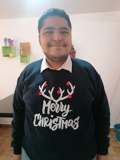

Esteban Rubén Mangas Calva | WDD 130
My name is Esteban Rubén Mangas Calva. I'm from Mexico, and actually I'm a programmer and web development student from BYU Pathway Worldwide. I'm married and have a small business of creative and personalized stationary, along with personalized vinil works with my wife. At last, but not least, I love videogames and technology; wich is part of the focus and passion I have as I'm discovering the marvels of being a programmer and web developer.